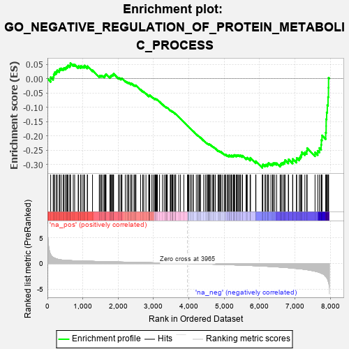
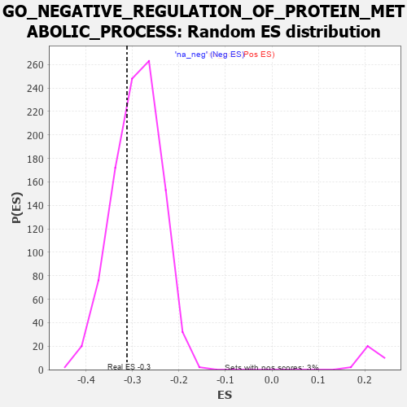

| | | Dataset | 7d |
| Phenotype | NoPhenotypeAvailable |
| Upregulated in class | na_neg |
| GeneSet | GO_NEGATIVE_REGULATION_OF_PROTEIN_METABOLIC_PROCESS |
| Enrichment Score (ES) | -0.31163248 |
| Normalized Enrichment Score (NES) | -1.0743164 |
| Nominal p-value | 0.31921488 |
| FDR q-value | 0.7840178 |
| FWER p-Value | 1.0 |
Table: GSEA Results Summary

Fig 1: Enrichment plot: GO_NEGATIVE_REGULATION_OF_PROTEIN_METABOLIC_PROCESS
Profile of the Running ES Score & Positions of GeneSet Members on the Rank Ordered List
| PROBE | GENE SYMBOL | GENE_TITLE | RANK IN GENE LIST | RANK METRIC SCORE | RUNNING ES | CORE ENRICHMENT | | 1 | WFDC8 | | | 91 | 1.777 | 0.0046 | No |
| 2 | SPI1 | | | 162 | 1.182 | 0.0065 | No |
| 3 | PZP | | | 178 | 1.129 | 0.0150 | No |
| 4 | BCL3 | | | 202 | 1.047 | 0.0216 | No |
| 5 | INSM1 | | | 250 | 0.939 | 0.0242 | No |
| 6 | HGF | | | 276 | 0.870 | 0.0290 | No |
| 7 | WEE2 | | | 333 | 0.766 | 0.0289 | No |
| 8 | CNOT7 | | | 348 | 0.750 | 0.0340 | No |
| 9 | BAX | | | 387 | 0.711 | 0.0356 | No |
| 10 | SUFU | | | 443 | 0.665 | 0.0346 | No |
| 11 | LRP1 | | | 470 | 0.648 | 0.0373 | No |
| 12 | CNOT2 | | | 514 | 0.625 | 0.0375 | No |
| 13 | PKN1 | | | 535 | 0.619 | 0.0406 | No |
| 14 | NLE1 | | | 565 | 0.609 | 0.0425 | No |
| 15 | CCNB1 | | | 581 | 0.601 | 0.0461 | No |
| 16 | GLMN | | | 632 | 0.583 | 0.0450 | No |
| 17 | NOC2L | | | 647 | 0.578 | 0.0485 | No |
| 18 | RBM4 | | | 649 | 0.576 | 0.0537 | No |
| 19 | SF3B3 | | | 729 | 0.552 | 0.0486 | No |
| 20 | CLN8 | | | 769 | 0.539 | 0.0485 | No |
| 21 | IGBP1 | | | 869 | 0.514 | 0.0405 | No |
| 22 | HDAC8 | | | 881 | 0.510 | 0.0438 | No |
| 23 | PDCD4 | | | 941 | 0.497 | 0.0407 | No |
| 24 | PTPA | | | 947 | 0.497 | 0.0447 | No |
| 25 | MEN1 | | | 1003 | 0.483 | 0.0420 | No |
| 26 | AKT1 | | | 1040 | 0.476 | 0.0418 | No |
| 27 | TAF9 | | | 1046 | 0.475 | 0.0455 | No |
| 28 | SRC | | | 1128 | 0.459 | 0.0393 | No |
| 29 | NCK2 | | | 1131 | 0.458 | 0.0432 | No |
| 30 | CNOT3 | | | 1274 | 0.435 | 0.0289 | No |
| 31 | U2AF2 | | | 1466 | 0.396 | 0.0079 | No |
| 32 | TIMP2 | | | 1478 | 0.394 | 0.0101 | No |
| 33 | INHBB | | | 1514 | 0.388 | 0.0092 | No |
| 34 | SCO1 | | | 1536 | 0.385 | 0.0101 | No |
| 35 | PTPRT | | | 1578 | 0.378 | 0.0082 | No |
| 36 | BIRC8 | | | 1615 | 0.372 | 0.0070 | No |
| 37 | N4BP1 | | | 1622 | 0.370 | 0.0097 | No |
| 38 | DERL2 | | | 1632 | 0.368 | 0.0119 | No |
| 39 | TPPP | | | 1646 | 0.365 | 0.0136 | No |
| 40 | CSN2 | | | 1656 | 0.363 | 0.0158 | No |
| 41 | AGO2 | | | 1767 | 0.343 | 0.0047 | No |
| 42 | LRP5 | | | 1769 | 0.342 | 0.0078 | No |
| 43 | STRAP | | | 1793 | 0.339 | 0.0079 | No |
| 44 | FNIP1 | | | 1798 | 0.338 | 0.0105 | No |
| 45 | FMR1 | | | 1816 | 0.334 | 0.0114 | No |
| 46 | PTPRQ | | | 1839 | 0.330 | 0.0116 | No |
| 47 | OTUB1 | | | 1857 | 0.326 | 0.0124 | No |
| 48 | SMAD4 | | | 1860 | 0.326 | 0.0152 | No |
| 49 | NUP62 | | | 1871 | 0.324 | 0.0169 | No |
| 50 | RAF1 | | | 2011 | 0.303 | 0.0017 | No |
| 51 | VPS25 | | | 2033 | 0.300 | 0.0018 | No |
| 52 | KDM3A | | | 2078 | 0.294 | -0.0012 | No |
| 53 | TAF7 | | | 2092 | 0.292 | -0.0002 | No |
| 54 | BMP7 | | | 2107 | 0.290 | 0.0007 | No |
| 55 | TIPRL | | | 2200 | 0.277 | -0.0086 | No |
| 56 | PSMF1 | | | 2251 | 0.268 | -0.0126 | No |
| 57 | XRCC1 | | | 2287 | 0.262 | -0.0147 | No |
| 58 | GSKIP | | | 2304 | 0.259 | -0.0144 | No |
| 59 | MIF | | | 2357 | 0.252 | -0.0188 | No |
| 60 | SIN3A | | | 2361 | 0.251 | -0.0169 | No |
| 61 | HIPK2 | | | 2389 | 0.247 | -0.0181 | No |
| 62 | KDM1A | | | 2447 | 0.237 | -0.0232 | No |
| 63 | UBXN1 | | | 2467 | 0.232 | -0.0235 | No |
| 64 | UBAC2 | | | 2488 | 0.229 | -0.0240 | No |
| 65 | KAT2B | | | 2502 | 0.226 | -0.0236 | No |
| 66 | EIF3E | | | 2634 | 0.207 | -0.0386 | No |
| 67 | ZGPAT | | | 2694 | 0.200 | -0.0444 | No |
| 68 | SLIT2 | | | 2724 | 0.195 | -0.0463 | No |
| 69 | XRN1 | | | 2786 | 0.185 | -0.0525 | No |
| 70 | UCHL5 | | | 2864 | 0.172 | -0.0608 | No |
| 71 | CIRBP | | | 2876 | 0.170 | -0.0607 | No |
| 72 | DAPK3 | | | 2880 | 0.169 | -0.0595 | No |
| 73 | WDR5 | | | 2892 | 0.168 | -0.0594 | No |
| 74 | MTM1 | | | 2893 | 0.168 | -0.0578 | No |
| 75 | SOCS4 | | | 2953 | 0.157 | -0.0640 | No |
| 76 | AZIN2 | | | 2993 | 0.150 | -0.0676 | No |
| 77 | LEF1 | | | 3037 | 0.144 | -0.0719 | No |
| 78 | UFL1 | | | 3041 | 0.144 | -0.0709 | No |
| 79 | BIRC6 | | | 3047 | 0.143 | -0.0703 | No |
| 80 | PROS1 | | | 3070 | 0.141 | -0.0718 | No |
| 81 | CHP1 | | | 3089 | 0.138 | -0.0728 | No |
| 82 | GPX1 | | | 3109 | 0.135 | -0.0740 | No |
| 83 | PAX6 | | | 3170 | 0.127 | -0.0806 | No |
| 84 | PUS7 | | | 3254 | 0.113 | -0.0903 | No |
| 85 | SMAD3 | | | 3303 | 0.105 | -0.0955 | No |
| 86 | UBE2O | | | 3348 | 0.097 | -0.1003 | No |
| 87 | TAB1 | | | 3351 | 0.097 | -0.0997 | No |
| 88 | SMAD7 | | | 3369 | 0.093 | -0.1010 | No |
| 89 | GMFB | | | 3381 | 0.091 | -0.1016 | No |
| 90 | DDX3X | | | 3388 | 0.091 | -0.1015 | No |
| 91 | CNOT1 | | | 3473 | 0.081 | -0.1116 | No |
| 92 | CDK5 | | | 3480 | 0.080 | -0.1116 | No |
| 93 | UNK | | | 3491 | 0.079 | -0.1122 | No |
| 94 | UBR5 | | | 3518 | 0.074 | -0.1149 | No |
| 95 | HDAC3 | | | 3528 | 0.072 | -0.1154 | No |
| 96 | NELL1 | | | 3538 | 0.070 | -0.1159 | No |
| 97 | PIN1 | | | 3543 | 0.069 | -0.1158 | No |
| 98 | PRDX5 | | | 3547 | 0.068 | -0.1155 | No |
| 99 | PARD3 | | | 3584 | 0.063 | -0.1196 | No |
| 100 | WAC | | | 3618 | 0.056 | -0.1233 | No |
| 101 | CBL | | | 3621 | 0.056 | -0.1231 | No |
| 102 | RIC1 | | | 3627 | 0.055 | -0.1232 | No |
| 103 | NF1 | | | 3713 | 0.040 | -0.1338 | No |
| 104 | SKI | | | 3762 | 0.032 | -0.1397 | No |
| 105 | DGKQ | | | 3856 | 0.020 | -0.1515 | No |
| 106 | NCOR1 | | | 3961 | 0.000 | -0.1649 | No |
| 107 | IGF1R | | | 3970 | -0.002 | -0.1659 | No |
| 108 | CHMP6 | | | 3977 | -0.003 | -0.1667 | No |
| 109 | VPS35 | | | 3989 | -0.006 | -0.1680 | No |
| 110 | PCIF1 | | | 4004 | -0.009 | -0.1698 | No |
| 111 | ATG5 | | | 4051 | -0.016 | -0.1755 | No |
| 112 | SFRP2 | | | 4065 | -0.018 | -0.1771 | No |
| 113 | MTOR | | | 4114 | -0.025 | -0.1830 | No |
| 114 | ABL1 | | | 4125 | -0.027 | -0.1841 | No |
| 115 | TIMP1 | | | 4209 | -0.043 | -0.1944 | No |
| 116 | RPTOR | | | 4252 | -0.050 | -0.1993 | No |
| 117 | PAX5 | | | 4255 | -0.051 | -0.1991 | No |
| 118 | PCID2 | | | 4258 | -0.051 | -0.1989 | No |
| 119 | RGS3 | | | 4293 | -0.059 | -0.2028 | No |
| 120 | CTBP1 | | | 4323 | -0.064 | -0.2059 | No |
| 121 | CD109 | | | 4325 | -0.064 | -0.2054 | No |
| 122 | PRR5L | | | 4418 | -0.080 | -0.2166 | No |
| 123 | LRRK2 | | | 4467 | -0.087 | -0.2220 | No |
| 124 | ILK | | | 4510 | -0.096 | -0.2265 | No |
| 125 | PINX1 | | | 4515 | -0.097 | -0.2261 | No |
| 126 | NTRK2 | | | 4543 | -0.104 | -0.2286 | No |
| 127 | APC | | | 4558 | -0.107 | -0.2295 | No |
| 128 | BAG6 | | | 4563 | -0.108 | -0.2290 | No |
| 129 | PNKP | | | 4572 | -0.111 | -0.2290 | No |
| 130 | VPS28 | | | 4582 | -0.114 | -0.2291 | No |
| 131 | SNX25 | | | 4606 | -0.119 | -0.2310 | No |
| 132 | PPME1 | | | 4655 | -0.129 | -0.2360 | No |
| 133 | LIMK1 | | | 4684 | -0.136 | -0.2383 | No |
| 134 | CPEB2 | | | 4709 | -0.141 | -0.2401 | No |
| 135 | FBLN1 | | | 4748 | -0.149 | -0.2437 | No |
| 136 | TAOK3 | | | 4823 | -0.162 | -0.2517 | No |
| 137 | EIF3A | | | 4842 | -0.167 | -0.2525 | No |
| 138 | DLG1 | | | 4860 | -0.169 | -0.2531 | No |
| 139 | CLU | | | 4889 | -0.174 | -0.2551 | No |
| 140 | TLK2 | | | 4909 | -0.179 | -0.2559 | No |
| 141 | PRKDC | | | 4955 | -0.189 | -0.2600 | No |
| 142 | KLF4 | | | 5005 | -0.198 | -0.2645 | No |
| 143 | PURA | | | 5032 | -0.205 | -0.2660 | No |
| 144 | PDPK1 | | | 5043 | -0.207 | -0.2653 | No |
| 145 | DRD2 | | | 5088 | -0.221 | -0.2690 | No |
| 146 | MMP9 | | | 5108 | -0.227 | -0.2693 | No |
| 147 | UBE2Z | | | 5137 | -0.234 | -0.2708 | No |
| 148 | FLCN | | | 5140 | -0.235 | -0.2689 | No |
| 149 | IPO7 | | | 5142 | -0.236 | -0.2668 | No |
| 150 | HDAC6 | | | 5183 | -0.244 | -0.2698 | No |
| 151 | ASH1L | | | 5203 | -0.248 | -0.2699 | No |
| 152 | IPO5 | | | 5207 | -0.248 | -0.2680 | No |
| 153 | IDE | | | 5252 | -0.258 | -0.2713 | No |
| 154 | PTEN | | | 5262 | -0.261 | -0.2701 | No |
| 155 | EPHA4 | | | 5273 | -0.265 | -0.2689 | No |
| 156 | CELF4 | | | 5275 | -0.266 | -0.2666 | No |
| 157 | FKBP8 | | | 5296 | -0.270 | -0.2667 | No |
| 158 | LMO3 | | | 5342 | -0.283 | -0.2699 | No |
| 159 | EPHA1 | | | 5349 | -0.285 | -0.2680 | No |
| 160 | ACOT8 | | | 5364 | -0.288 | -0.2672 | No |
| 161 | PRDX3 | | | 5389 | -0.293 | -0.2676 | No |
| 162 | LATS1 | | | 5412 | -0.298 | -0.2677 | No |
| 163 | CBLB | | | 5445 | -0.306 | -0.2690 | No |
| 164 | LRIG2 | | | 5460 | -0.310 | -0.2679 | No |
| 165 | FABP4 | | | 5509 | -0.322 | -0.2712 | No |
| 166 | TFPI2 | | | 5516 | -0.324 | -0.2690 | No |
| 167 | LARP1 | | | 5616 | -0.349 | -0.2785 | No |
| 168 | G6PD | | | 5638 | -0.358 | -0.2779 | No |
| 169 | WNK1 | | | 5650 | -0.362 | -0.2760 | No |
| 170 | TIA1 | | | 5731 | -0.386 | -0.2828 | No |
| 171 | PDCL3 | | | 5738 | -0.388 | -0.2800 | No |
| 172 | ENSA | | | 5739 | -0.388 | -0.2764 | No |
| 173 | HINT2 | | | 5889 | -0.431 | -0.2916 | No |
| 174 | SET | | | 5895 | -0.434 | -0.2883 | No |
| 175 | CALR | | | 6077 | -0.499 | -0.3070 | Yes |
| 176 | PLK1 | | | 6082 | -0.500 | -0.3029 | Yes |
| 177 | FLOT2 | | | 6092 | -0.504 | -0.2995 | Yes |
| 178 | ROCK1 | | | 6152 | -0.520 | -0.3023 | Yes |
| 179 | RAG1 | | | 6176 | -0.530 | -0.3004 | Yes |
| 180 | MVP | | | 6223 | -0.543 | -0.3013 | Yes |
| 181 | RGN | | | 6233 | -0.547 | -0.2974 | Yes |
| 182 | TFAP4 | | | 6254 | -0.556 | -0.2949 | Yes |
| 183 | BOD1 | | | 6320 | -0.583 | -0.2979 | Yes |
| 184 | BIRC3 | | | 6366 | -0.603 | -0.2981 | Yes |
| 185 | ISG15 | | | 6385 | -0.608 | -0.2948 | Yes |
| 186 | CSK | | | 6428 | -0.630 | -0.2945 | Yes |
| 187 | DYSF | | | 6481 | -0.654 | -0.2951 | Yes |
| 188 | CLN3 | | | 6580 | -0.699 | -0.3013 | Yes |
| 189 | TPR | | | 6597 | -0.709 | -0.2969 | Yes |
| 190 | WWTR1 | | | 6631 | -0.729 | -0.2944 | Yes |
| 191 | RFFL | | | 6674 | -0.749 | -0.2929 | Yes |
| 192 | EGFR | | | 6708 | -0.765 | -0.2901 | Yes |
| 193 | GSK3B | | | 6719 | -0.768 | -0.2843 | Yes |
| 194 | PAQR3 | | | 6812 | -0.819 | -0.2887 | Yes |
| 195 | GIPC1 | | | 6819 | -0.826 | -0.2818 | Yes |
| 196 | SNX3 | | | 6934 | -0.893 | -0.2883 | Yes |
| 197 | GHSR | | | 6937 | -0.894 | -0.2803 | Yes |
| 198 | RNF34 | | | 7040 | -0.963 | -0.2846 | Yes |
| 199 | PIBF1 | | | 7049 | -0.966 | -0.2767 | Yes |
| 200 | PTPRB | | | 7122 | -1.010 | -0.2767 | Yes |
| 201 | SPON1 | | | 7151 | -1.035 | -0.2708 | Yes |
| 202 | PTPRJ | | | 7180 | -1.054 | -0.2647 | Yes |
| 203 | TSPO | | | 7194 | -1.065 | -0.2566 | Yes |
| 204 | CIB1 | | | 7280 | -1.152 | -0.2569 | Yes |
| 205 | CYLD | | | 7333 | -1.206 | -0.2525 | Yes |
| 206 | GPD1L | | | 7343 | -1.215 | -0.2425 | Yes |
| 207 | CALM1 | | | 7567 | -1.499 | -0.2574 | Yes |
| 208 | TAF1 | | | 7643 | -1.633 | -0.2520 | Yes |
| 209 | CST1 | | | 7692 | -1.746 | -0.2421 | Yes |
| 210 | PLPP3 | | | 7740 | -1.876 | -0.2309 | Yes |
| 211 | CASP3 | | | 7747 | -1.902 | -0.2142 | Yes |
| 212 | PDE4D | | | 7764 | -1.944 | -0.1983 | Yes |
| 213 | CALM3 | | | 7869 | -2.525 | -0.1885 | Yes |
| 214 | FYN | | | 7881 | -2.622 | -0.1657 | Yes |
| 215 | CHAC1 | | | 7882 | -2.633 | -0.1415 | Yes |
| 216 | CAV3 | | | 7896 | -2.739 | -0.1179 | Yes |
| 217 | PI16 | | | 7914 | -2.948 | -0.0929 | Yes |
| 218 | ARRB1 | | | 7935 | -3.377 | -0.0644 | Yes |
| 219 | XIAP | | | 7947 | -3.696 | -0.0317 | Yes |
| 220 | DAPK1 | | | 7950 | -3.767 | 0.0027 | Yes |
Table: GSEA details [plain text format]

Fig 2: GO_NEGATIVE_REGULATION_OF_PROTEIN_METABOLIC_PROCESS: Random ES distribution
Gene set null distribution of ES for GO_NEGATIVE_REGULATION_OF_PROTEIN_METABOLIC_PROCESS